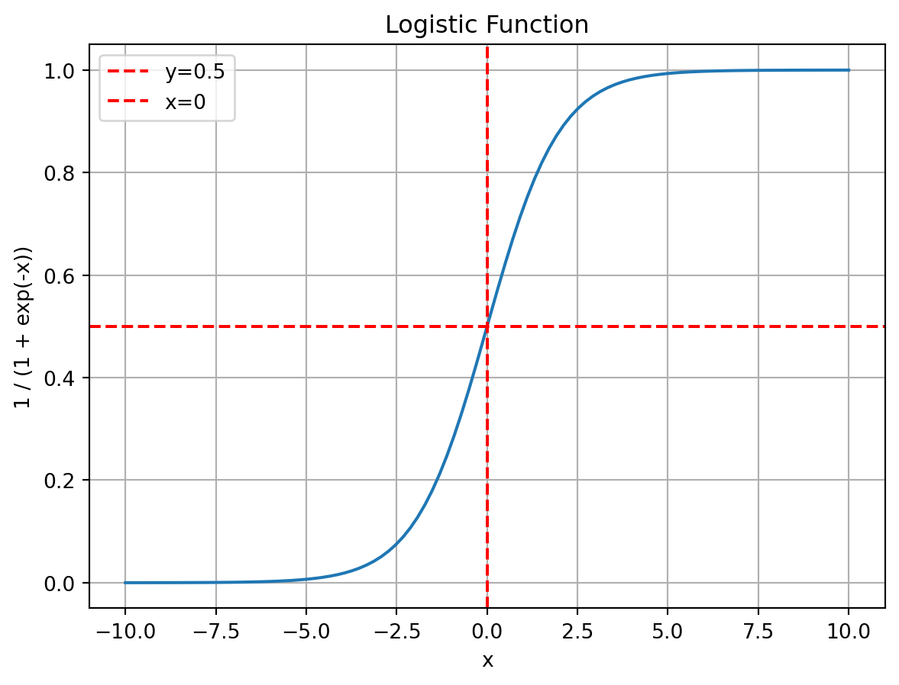
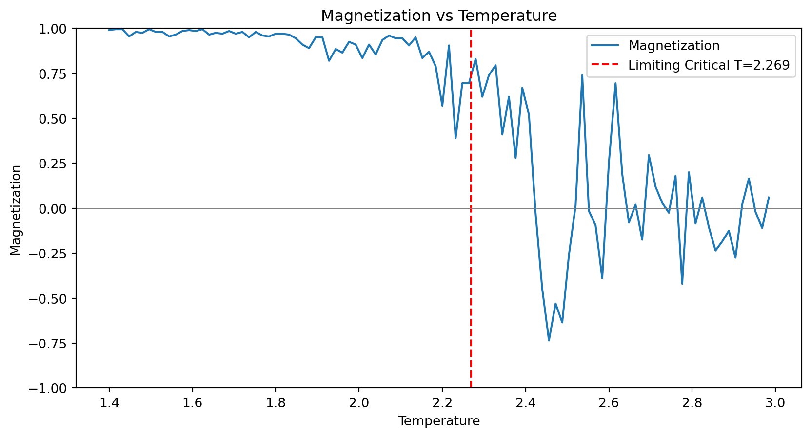
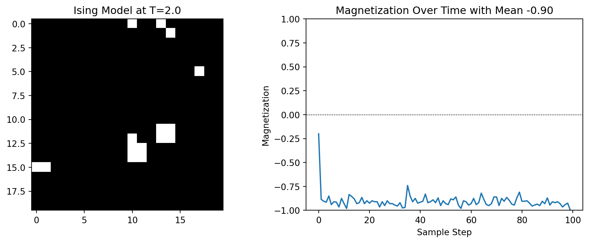
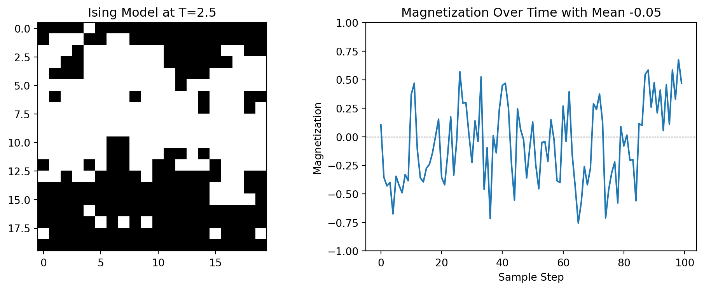

14 Ising Model
14.1 The Physical Ising Model
The Ising model is a simple model of ferromagnetism from statistical mechanics. The setup is as follows:
- Particles: We have a lattice of \(N\) particles, each of which can be have one of two states of magnetization: spin up (\(X = 1\)) or spin down (\(X = -1\)). For simplicity, we assume the grid is “wrapped” so that the top and bottom edges are connected, and the left and right edges are connected. This means that each site has four neighbors. Such a grid is called a torus.
- Coupling constant: Two adjacent particles have a tendency to have spins aligned. This tendency is quantified by a coupling constant \(J\). If two adjacent particles have the same spin, the energy of the system is lowered by \(-J\), and if they have opposite spins, the energy is raised by \(J\). Any physical system tends to minimize its energy, so the system will tend to have neighboring particles with the same spin.
- External magnetic field: For the same of simplicity we’ll assume that there is no external force field.
- Temperature: Temperature adds randomness to the system. At 0K, all the particles have their spins aligned. As the temperature increases, the particles start to flip their spins. The higher the temperature, the more likely it is for neighboring particles to have opposite spins.
- Magnetization: If the system is in a state where most of the particles have the same spin, the system is said to be magnetized.
Next we create a mathematical model to describe the system.
14.2 The Mathematical Ising Model
We model the system using \(N^2\) random variables \(X_{i, j}\). Each \(X_{i, j}\) is a binary random variable that takes the value \(1\) or \(-1\). The configuration of the system is given by the \(N^2\) length vector \(\mathbf{X} = (X_{1, 1}, X_{1, 2}, \ldots, X_{N, N})\). There are \(2^{N^2}\) possible configurations of the system i.e. the state space has size \(2^{N^2}\). We can imagine each configuration as being the vertex of a hypercube in \(N^2\) dimensions with vertices \((\pm 1, \pm 1, \ldots, \pm 1)\). We’ll let the variable \(\sigma\) denote a configuration of the system. So \(\sigma\) is a vector of length \(N^2\) with entries in \(\{-1, 1\}\).
In order to describe the system mathematically, we need to provide the joint probability distribution of the random variables \(X_{i, j}\). This is done using the Hamiltonian of the system and the Boltzmann distribution.
14.2.1 Hamiltonian
The Hamiltonian of the system is given by
\[ H(\sigma) = -J \sum \limits_{(i, j) \text{ and } (i', j') \text{ are neighbors}} X_{i, j} X_{i', j'} \]
where the sum is over all pairs of neighboring particles. The Hamiltonian is just a measure of the energy of the system. Note that because \(J\) is positive, the energy is minimized when neighboring particles have the same spin.
14.2.2 Boltzmann Distribution
The probability of the system being in a particular configuration \(\sigma\) is given by the Boltzmann distribution:
\[ f(\sigma) = \frac{e^{-H(\sigma)/T}}{Z} \]
where \(T\) is the temperature, and \(Z\) is the normalization constant called the partition function. This is the joint probability mass function of the random variables \(X_{i, j}\). The partition function \(Z\) is not easy to compute, but thankfully we do not need it to sample from the joint distribution.
14.2.3 Low Temperature
If we plugin the partition function explicitly, we can see that the probability distribution becomes
\[ f(\sigma) = \frac{e^{-H(\sigma)/T}}{\sum \limits_{\sigma'}e^{-H(\sigma')/T}}. \]
As \(T \to 0\), the term with the highest value of \(-H(\sigma)\) will dominate the sum in the denominator. But the term with the highest value of \(-H(\sigma)\) is the one that minimizes \(H(\sigma)\). So,
\[ \lim \limits_{T \to \infty} f(\sigma) = \lim \limits_{T \to \infty} \frac{e^{-H(\sigma)/T}}{e^{-H(\sigma)_{\min}/T}} = \lim \limits_{T \to \infty} e^{(H(\sigma)_{\min} - H(\sigma))/T}. \]
If \(H(\sigma)_{\min} = H(\sigma)\), then the probability of the system being in that state is \(1\) and \(0\) otherwise. This means that at low temperatures, the system will be in a state that minimizes the energy. But as \(T\) increases, more and more high energy states become probable. So temperature can be thought of as adding variability to the system.
14.2.4 Magnetization
The magnetization of the system is given by
\[ M(\sigma) = \frac{1}{N^2} \sum \limits_{i, j} X_{i, j} \]
If the system is magnetized, then \(M(\sigma)\) will be close to \(1\) or \(-1\). Our goal is to find the expected value of the magnetization of the system. To do this we need to sample from the distribution \(f(\sigma)\) and then compute the magnetization of each sample. The average of these magnetizations will be the expected magnetization of the system.
14.3 Phase Transitions
It was discovered that the Ising model for a 2D grid exhibits a phenomenon called phase transition. If we slowly increase the temperature, we expect the magnetization to decrease. What is surprising is that the magnetization decreases smoothly until a certain temperature, after which it drops suddenly. This sudden drop is called a phase transition. The temperature at which this happens is called the critical temperature.
It is possible to calculate the critical temperature theoretically, in the limit when the size of the lattice \(\to \infty\). This limiting critical temperature for a square lattice is given by
\[ T_c = \dfrac{2J}{\log(1 + \sqrt{2})}. \]
Of course, in our simulation, we’ll be using finite sized lattices so we should expect some deviation from this result.
14.4 Gibbs Sampling
There are two natural ways of sampling from the distribution \(f(\sigma)\): Metropolis-Hastings and Gibbs sampling. In the Metropolis-Hastings approach, we randomly choose a particle and flip its spin. We then accept or reject the new configuration based on the Metropolis-Hastings acceptance probability. In the Gibbs sampling approach, we update the entire grid of particles one at a time. We update each particle by sampling from the conditional distribution of that particle given the rest of the particles.
14.4.1 Conditional Distribution
Consider a single spin \(X_{i, j}\). Let \(\hat{X}_{i, j}\) denote the set of spins at all sites except \((i, j)\). We want to find the conditional distribution of \(X_{i, j}\) given \(\hat{X}_{i, j}\).
14.4.1.1 Derivation from Boltzmann Distribution
The conditional probability can be derived directly from the Boltzmann distribution. The key insight is that when we condition on all other spins, only the energy terms involving \(X_{i,j}\) matter for the probability ratio.
The full Hamiltonian can be written as: \[H(\sigma) = H_{\text{rest}} + H_{\text{local}}\]
where \(H_{\text{rest}}\) contains all terms not involving \(X_{i,j}\), and \[H_{\text{local}} = -J \cdot X_{i,j} \sum_{(i',j') \in \text{neighbors}(i,j)} X_{i',j'} = -X_{i,j} \cdot h_{i,j}\]
Here, \(h_{i,j} = J(X_{i-1,j} + X_{i+1,j} + X_{i,j-1} + X_{i,j+1})\) is the effective field at site \((i,j)\).
Using the Boltzmann distribution: \[P(X_{i,j} = s | \hat{X}_{i,j}) = \frac{e^{-H(\sigma)/T}}{e^{-H(\sigma_{+1})/T} + e^{-H(\sigma_{-1})/T}}\]
where \(\sigma_{+1}\) and \(\sigma_{-1}\) are configurations with \(X_{i,j} = +1\) and \(X_{i,j} = -1\) respectively.
Since \(H_{\text{rest}}\) cancels out in the ratio: \[P(X_{i,j} = +1 | \hat{X}_{i,j}) = \frac{e^{h_{i,j}/T}}{e^{h_{i,j}/T} + e^{-h_{i,j}/T}} = \frac{1}{1 + e^{-2h_{i,j}/T}}\]
Similarly: \[P(X_{i,j} = -1 | \hat{X}_{i,j}) = \frac{e^{-h_{i,j}/T}}{e^{h_{i,j}/T} + e^{-h_{i,j}/T}} = \frac{1}{1 + e^{2h_{i,j}/T}}\]
This gives us our final result:
\[ \begin{aligned} P(X_{i, j} = 1 | \hat{X}_{i, j}) &= \dfrac{1}{1 + \exp(-2 h_{i, j} / T)}, \\ P(X_{i, j} = -1 | \hat{X}_{i, j}) &= 1 - P(X_{i, j} = 1 | \hat{X}_{i, j}). \end{aligned} \tag{14.1}\]
Thus the conditional distribution in Equation 14.1 is a logistic function.
14.4.1.2 Physical Interpretation of the Effective Field
The effective field \(h_{i,j}\) represents the “magnetic influence” of the neighboring spins:
- When \(h_{i,j} > 0\): Most neighbors are spin-up (\(+1\)), favoring \(X_{i,j} = +1\)
- When \(h_{i,j} < 0\): Most neighbors are spin-down (\(-1\)), favoring \(X_{i,j} = -1\)
- When \(h_{i,j} = 0\): Equal influence from up and down neighbors, so \(P(X_{i,j} = +1) = 0.5\).
The temperature \(T\) controls how strongly the system responds to this local field:
- Low \(T\): Sharp response, spins almost always align with neighbors
- High \(T\): Weak response, spins behave more randomly regardless of neighbors.
14.5 Metropolis-Hastings Algorithm
While Gibbs sampling updates spins by sampling from exact conditional distributions, the Metropolis-Hastings algorithm uses a different approach: it proposes random changes and accepts or rejects them based on how they affect the system’s energy.
14.5.1 The Algorithm
The Metropolis-Hastings algorithm for the Ising model works as follows:
- Proposal step: Randomly select a spin \(X_{i,j}\) and propose flipping it: \(X_{i,j} \to -X_{i,j}\)
- Energy calculation: Compute the energy change \(\Delta E\) caused by this flip
- Acceptance decision: Accept the flip with probability \(\min(1, e^{-\Delta E/T})\)
- Update: If accepted, flip the spin; if rejected, keep the current state
14.5.2 Energy Change Calculation
When we flip spin \(X_{i,j}\) from \(s\) to \(-s\), only the energy terms involving this spin change. The energy change is:
\[\Delta E = E_{\text{new}} - E_{\text{old}} = -J(-s)\sum_{\text{neighbors}} X_{i',j'} - (-J \cdot s \sum_{\text{neighbors}} X_{i',j'})\]
\[\Delta E = 2J \cdot s \sum_{\text{neighbors}} X_{i',j'} = 2s \cdot h_{i,j}\]
where \(h_{i,j} = J(X_{i-1,j} + X_{i+1,j} + X_{i,j-1} + X_{i,j+1})\) is the same effective field from Gibbs sampling.
14.5.3 Acceptance Probability
The Metropolis acceptance probability is: \[P_{\text{accept}} = \min\left(1, e^{-\Delta E/T}\right) = \min\left(1, e^{-2s \cdot h_{i,j}/T}\right)\]
This has a simple interpretation:
- Energy-lowering moves (\(\Delta E < 0\)): Always accepted (probability = 1)
- Energy-raising moves (\(\Delta E > 0\)): Accepted with probability \(e^{-\Delta E/T}\)
Higher temperatures make the algorithm more likely to accept energy-raising moves, allowing exploration of higher-energy configurations.

14.5.4 The Algorithm
- Initialize the grid of spins \(X_i\) for \(i = 1\) to \(N\) randomly.
- For \(i = 1\) to \(N\)
- For \(j = 1\) to \(N\)
- Compute the effective field \(h_{i, j}\).
- Generate a random number \(u\) from a uniform distribution.
- Set \(X_{i, j}\) to \(1\) if \(u < \dfrac{1}{1 + \exp(-2 h_{i, j} / T)}\) and \(-1\) otherwise.
- For \(j = 1\) to \(N\)
- Compute the magnetization of the system.
- Repeat steps 2 and 3.
14.5.5 Comparison with Gibbs Sampling
| Aspect | Gibbs Sampling | Metropolis-Hastings |
|---|---|---|
| Update mechanism | Sample from exact conditional distribution | Propose and accept/reject |
| Computational cost | Requires exponential (logistic) calculation | Simple energy difference |
| Acceptance rate | Always 100% (every update accepted) | Variable (depends on T and local environment) |
| Implementation | More complex (logistic function) | Simpler (just energy differences) |
| Generalizability | Requires known conditional distributions | Works for any energy function |
| Efficiency near T_c | Generally faster convergence | Can have low acceptance rates |
14.6 Wolff Algorithm for Critical Temperature Sampling
Near the critical temperature, both Gibbs sampling and single-spin Metropolis–Hastings suffer from critical slowing down.
The correlation length \(\xi\) diverges as \(\xi \sim |T - T_c|^{-\nu}\), causing spins to become highly correlated over large distances.
Single-spin updates can no longer efficiently explore the configuration space because flipping individual spins disrupts large correlated regions, leading to extremely long equilibration times.
The Wolff algorithm, developed by Ulli Wolff in 1989, solves this problem by identifying and flipping entire clusters of aligned spins simultaneously, dramatically reducing critical slowing down at low temperatures and near the critical point.
14.6.1 The Physical Motivation
At low temperatures and near \(T_c\), the system develops large domains of aligned spins that fluctuate together as coherent units.
Traditional single-spin algorithms fight against these natural correlations by attempting to flip spins one at a time.
The Wolff algorithm instead:
- Identifies clusters of spins that “want” to flip together
- Respects the correlation structure by flipping entire domains
- Maintains detailed balance while working with the physics rather than against it
This approach is analogous to the difference between trying to turn a school of fish by grabbing individual fish versus guiding the entire school as a unit.
14.6.2 The Algorithm
Seed selection: Randomly choose a starting spin \(s_0\) at site \((i_0, j_0)\).
Cluster growth: Use a breadth-first search (BFS) to grow a cluster:
- Initialize a queue with the seed spin.
- Mark the seed as visited.
- While the queue is not empty:
- Remove a spin from the queue.
- Examine each of its four neighbors.
- If a neighbor has the same orientation as the original seed spin and has not been visited:
- Add it to the cluster with probability \(P_{\text{add}} = 1 - e^{-2\beta J}\).
- If added, mark as visited and add to the queue.
- Remove a spin from the queue.
- Initialize a queue with the seed spin.
Cluster flip: Flip all spins in the identified cluster simultaneously.
Acceptance: The move is always accepted (acceptance probability \(= 1\)).
14.6.3 The Addition Probability
The key insight is the addition probability $\(P_{\text{add}} = 1 - e^{-2\beta J}\). This probability is carefully chosen to maintain detailed balance and has intuitive temperature dependence.
14.6.3.1 High temperature (\(T \gg T_c\)):
\(\beta = \frac{1}{T} \text{ small} \quad \Rightarrow \quad P_{\text{add}} \approx 2\beta J \approx 0.\)
- Clusters remain small, typically containing only 1–2 spins.
- Behavior similar to single-spin updates.
14.6.3.2 Low temperature (\(T \ll T_c\)):
\(P_{\text{add}} \approx 1 \quad (\text{since } 2\beta J \text{ is large}),\)
- Large aligned regions are almost always included in clusters.
- Entire domains flip together efficiently, avoiding high-energy intermediate states.
14.6.3.3 Critical temperature (\(T \approx T_c\)):
- \(P_{\text{add}}\) takes intermediate values.
- Cluster sizes automatically match the natural correlation length \(\xi\).
- Optimal balance between exploration and respecting correlations.
14.6.4 Physical Interpretation of Clusters
The clusters identified by the Wolff algorithm have physical meaning:
- Small clusters (\(\text{size} \sim 1\)): high-temperature regime, spins behave independently.
- Medium clusters (\(\text{size} \sim 10\)–\(100\)): intermediate correlations, local domains.
- Large clusters (\(\text{size} \sim L^2\)): low temperature or near critical point, system-spanning correlations.
- Percolating clusters: clusters that wrap around periodic boundaries indicate long-range order.
The average cluster size \(\langle s \rangle\) is related to the magnetic susceptibility: \(\langle s \rangle \sim \chi \sim |T - T_c|^{-\gamma}\), providing a direct probe of critical behavior.
14.6.5 Comparison with Other Methods
| Aspect | Single-Spin | Wolff Algorithm |
|---|---|---|
| Update size | Always 1 spin | Variable (1 to L² spins) |
| Acceptance rate | Variable (very low at low T) | Always 100% |
| Critical slowing down | Severe | Minimal |
| Implementation | Simple | Moderate complexity |
| Memory usage | Minimal | Moderate (cluster storage) |
| Efficiency at high T | Good | Similar |
| Efficiency near T_c | Very poor | Excellent |
| Efficiency at low T | Poor | Excellent |
14.7 Simulation Results
Below are the results of simulating the Ising model on a \(20 \times 20\) grid for \(J = 1\). The predicted critical temperature is \(T_c = 2.269\).
We can see that at \(T=1.5\), the system is magnetized and the magnetization is more or less constant and close to 1 or -1 over various runs. At \(T=2.5\), the system is not magnetized and the average magnetization is close to 0. It fluctuates wildly over various runs.
If we gradually increase the temperature from \(T=1\) to \(T=3\), we can see that the magnetization decreases smoothly until \(T=2\) after which it drops suddenly. This is the phase transition. Below the graph are the snapshots of the grid at different temperatures. One can see that at low temperatures, the grid is mostly monochromatic, but at high temperatures, the grid is more chaotic.




14.8 Final Remarks
Not all graphs show a phase transition. The Ising model in 1D has no phase transition at any temperature. It was conjectured that the Ising model in 2D has no phase transition either, but this was proven wrong when an analytical solution was found by Lars Onsager in 1944. The Ising model in 3D also has a phase transition, but the critical temperature is not known exactly. Most critical temperatures are only known for limiting cases when the size of the lattice goes to infinity. For finite cases, Monte Carlo simulations are the only way to estimate the critical temperature.